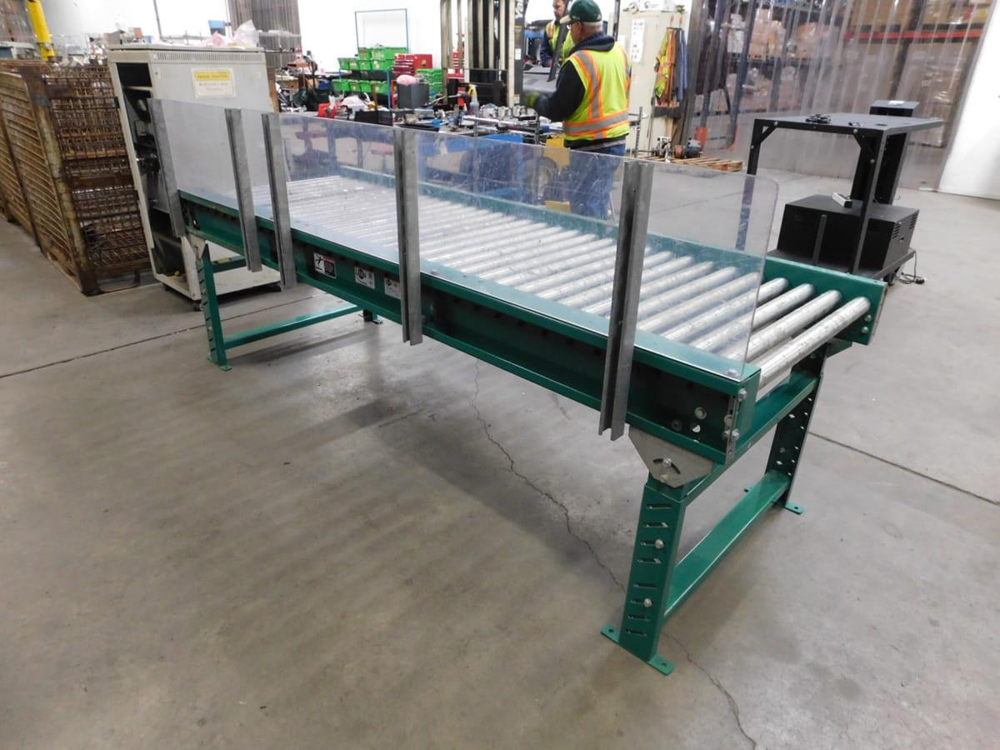
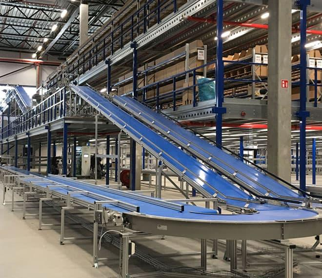
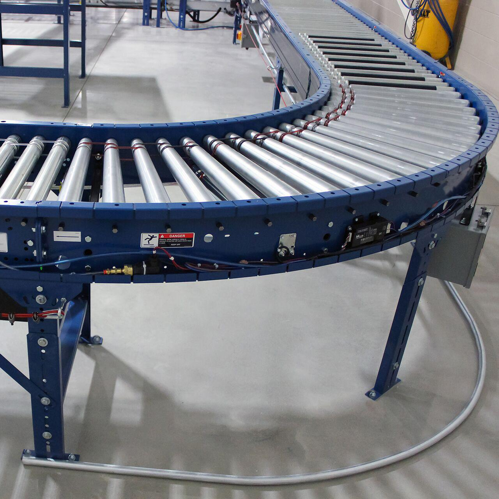
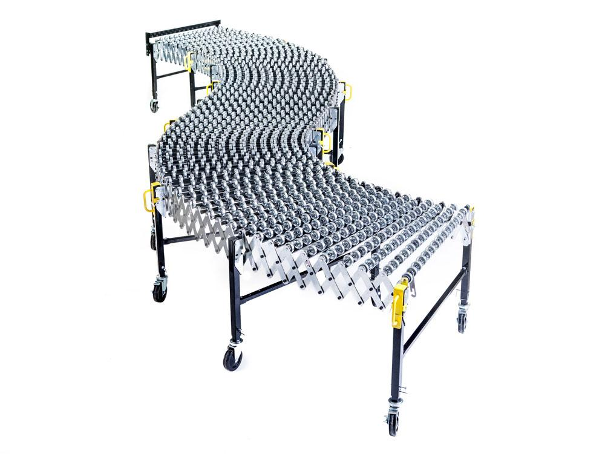
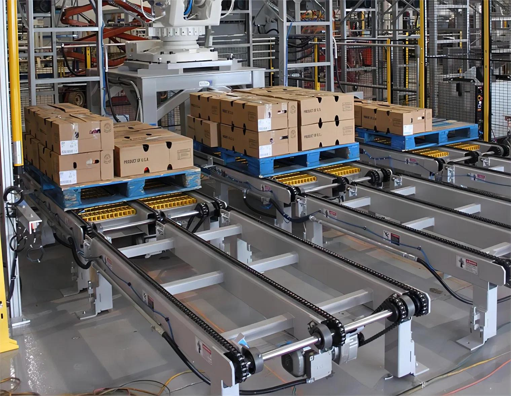
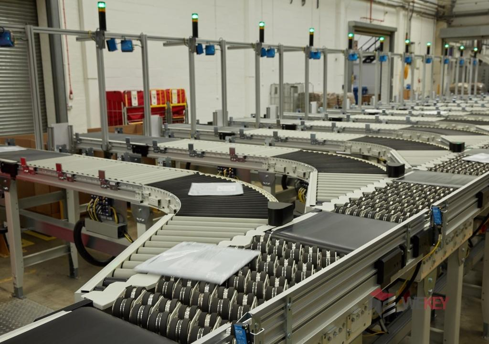
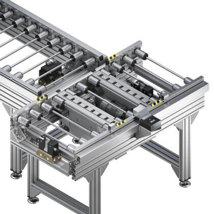
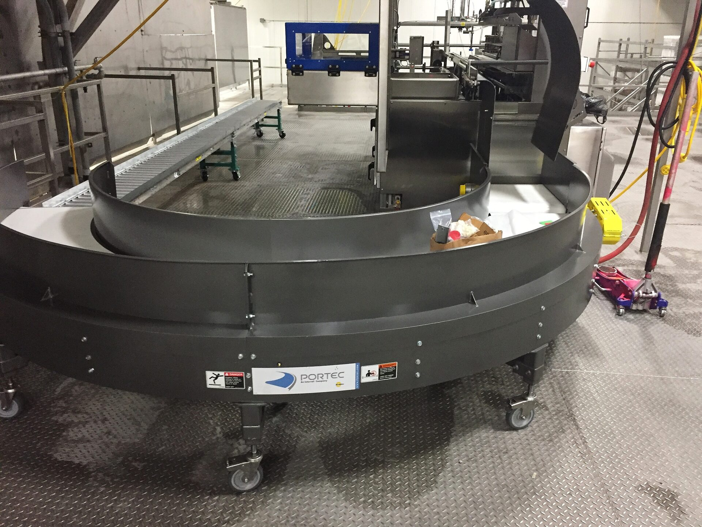

Conveyors Matched to How Product Actually Moves
Cartons, totes, pallets, and loose product move more efficiently on a conveyor line chosen for your throughput, handling needs, floor plan, and automation targets.
A Warehouse Runs on Product Flow
Every high-performing warehouse comes back to how smoothly product moves.
We look at your products, workflow, operational goals, and growth trajectory to identify transport equipment that actually fits. That means pairing you with manufacturers and proven handling technology instead of guessing at a solution.
What We Evaluate
- Product size, weight, packaging, and how it needs to be oriented
- Target throughput and how accumulation and release should work
- Distance traveled, elevation changes, curves, merges, and diverts
- Where it fits into picking, packing, shipping, and replenishment
- Controls, sensors, guarding, operator access, and safety needs
- How it ties into WMS, WCS, robotics, sortation, and future volume
Different Lines Solve Different Problems
Movement, accumulation, and routing are three different challenges, and each conveyor type answers one better than the others. We help weigh load characteristics, speed, control, durability, upkeep, and integration before anything is finalized.

Roller Conveyors
A dependable, general-purpose way to move cartons, totes, pallets, and most other products from one point in your facility to another.
Best fit: general carton and tote transport
Belt Conveyors
A continuous belt handles mixed product sizes and shapes gracefully, giving you smooth, steady transport from one workstation to the next.
Best fit: varied product shapes needing gentle handling
Powered Roller Conveyors
Motor-driven rollers push more volume through picking, packing, sorting, and shipping without leaning on manual labor to keep pace.
Best fit: high-throughput zones needing controlled flow
Gravity Conveyors
No motor required—gravity does the work, which keeps cost down and makes these a natural fit for loading docks and temporary setups.
Best fit: docks and low-cost manual-flow areas
Pallet Conveyors
Engineered for weight, these lines move heavy pallet loads safely between storage, production, and automated equipment.
Best fit: heavy, automated pallet movement
Sortation Systems
Products get routed to the correct destination automatically, which tightens order accuracy and takes labor out of the equation.
Best fit: automated fulfillment and shipping lanes
Transfers & Conveyor Accessories
Merges, diverts, lifts, turntables, and transfer units connect separate conveyor lines into one continuous flow.
Best fit: connecting lines and handling directional changes
Custom Conveyor Solutions
No two operations look alike. We design conveyor systems that work with your pallet rack, mezzanines, automation, robotics, and WCS as one complete warehouse solution rather than a bolt-on addition.
Best fit: automated or space-constrained facilitiesFrom Product Flow to a Conveyor Plan You Can Build
Your products, throughput, routing, labor, safety, and integration needs come first—the conveyor type gets picked after, not before.
Assess
Log product characteristics, throughput, workflows, travel paths, labor constraints, controls, and growth targets.
Compare
Weigh conveyor technologies and manufacturers on speed, load, control, upkeep, budget, and lifecycle cost.
Integrate
Fit the chosen system into sortation, controls, WMS/WCS, robotics, workstations, guarding, and installation.
Ready for a Conveyor Line That Keeps Pace?
Tell us what needs to move, accumulate, sort, climb, or connect in your facility, and we'll help map out the right strategy.